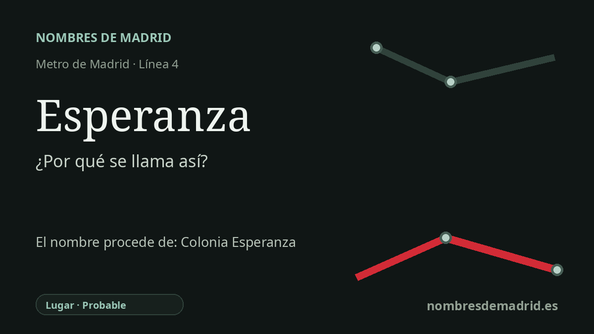

Publicado el · Investigación de Nombres de Madrid · Cómo verificamos cada origen · 7 fuentes consultadas
Respuesta rápida
Esperanza toma probablemente su nombre de la Colonia Virgen de la Esperanza, la gran promoción residencial moderna que rodea la estación en Canillas, Hortaleza. La parada de la línea 4 se inauguró el 5 de enero de 1979, con acceso en la calle de Andorra.
La historia del nombre
La estación de Esperanza toma su nombre, con alta probabilidad, de la Colonia Virgen de la Esperanza, la promoción residencial que rodea su acceso en Canillas. La ficha oficial del CRTM sitúa la parada de la línea 4 en el acceso de Andorra, calle de Andorra, 51, mientras que las fuentes arquitectónicas identifican este ámbito como Barrio de Nueva Esperanza o Colonia Virgen de la Esperanza.
El topónimo pertenece a la expansión residencial madrileña de la posguerra y del tardofranquismo, no a un paisaje rural antiguo. El COAM documenta una ordenación de 1965 realizada por un amplio equipo de arquitectos y unas viviendas construidas en 1969-1971 por Antonio Camuñas Paredes y José Antonio Camuñas Solís para la Cooperativa Virgen de la Esperanza. Su descripción formal da la escala del conjunto: 3.393 viviendas repartidas en 156 bloques de cinco alturas y 20 torres exentas de diecisiete.
La cronología urbana es importante porque Canillas fue municipio independiente hasta mediados del siglo XX. El Ayuntamiento de Madrid explica que Canillas se anexionó a Madrid en 1950 y después quedó integrado en el crecimiento urbano que transformó Hortaleza. En los años setenta, grandes conjuntos como Virgen del Cortijo y la Colonia Virgen de la Esperanza marcaron el paso de un borde periférico a un distrito metropolitano.
El Metro llegó cuando la colonia ya estaba asentada. La historia de la línea 4 publicada por la Comunidad de Madrid indica que la prolongación Alfonso XIII-Esperanza se inauguró el 5 de enero de 1979, con 2,221 kilómetros y tres estaciones nuevas. Así, Esperanza se convirtió en un nombre terminal de transporte ligado a una identidad vecinal creada pocos años antes.
Conviene tratar algunos detalles con cautela. La estación está en el distrito actual de Hortaleza, en Canillas, no en Chamartín, aunque Canillas y Hortaleza estuvieron administrativamente integrados en Chamartín antes de la reorganización distrital de 1970. El grupo de calles con nombres turolenses, como Andorra, Calanda, Alcorisa y Utrillas, aparece en la geografía local y en descripciones secundarias, pero las fuentes más fuertes localizadas prueban con más claridad el contexto arquitectónico y de transporte que el origen de los residentes.